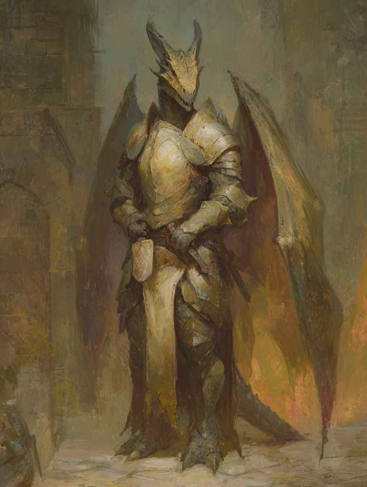

A scaled disciple who left the cloister with the language of judgment in his throat and fire in his lungs. He names a foe and the wrath begins to climb. He does not say repent. He says your allies cannot save you.
Cain is a Dragon Knight of the Disciple career — a scaled humanoid who served a religious institution until a near-death accident broke whatever oath he had been keeping there. He woke remembering nothing of the church or the temple. He left. He kept the prayers; he discarded the building. His class is Censor, subclass Exorcist, with the War domain. He names a target, calls down judgment on it, and proceeds to dismantle that target while purifying fire eats the wound he has opened.
In bearing: heavy of frame, slow of speech, deliberate in his motions. He prefers a heavy weapon at melee distance to a holy book at preaching distance. He intuits creatures — demon, humanoid, undead — the way a butcher intuits joints. His Presence runs as high as his Might; what he speaks is mostly judgment, and what he does is mostly violence, and these two activities are, for him, one thing.
Bronze-scaled and broad-shouldered, with a heavy jaw and the suggestion of horn-ridges along the brow. Wings fold close against his back — not large enough to fly, ample enough to guard. His breath, when he draws it for the exhalation, glows faint amber behind the teeth. The shining armor over his hide is dented but well-kept; the trappings have been deliberately stripped of any sect insignia he might once have worn.
Two peaks at +2 (Might and Presence); Reason is the only negative. Cain is built to engage at melee distance and to pronounce judgment with authority. He is not the one to decipher the cipher or recall the obscure precedent — but he can name a creature’s nature on sight and bring weight to whatever the table decides.
| Field | Value |
|---|---|
| Size | 1M — Medium |
| Speed | 5 |
| Disengage | 1 |
| Stability | 1 (+1 from kit = 2 effective) |
| Melee Damage Bonus | +2 / +2 / +2 across tiers (kit) |
| Surges | 0 — 1 surge = +2 damage; 2 surges = +1 potency |
| Immunity | Fire 1 (ancestry) |
| Weaknesses | None |
| Victories | 5 ||||/ — from the keep and the hunt |
| Threshold | Value |
|---|---|
| Weak | 0 |
| Average | 1 |
| Strong | 2 |
Wrath is the Censor’s measure of righteous escalation. It is not anger. It is the steady accumulation of authority Cain earns by being on the field, in melee, exchanging blows with the creature he has named.
Cain names a target with Judgment. From that moment, every exchange between him and the judged is taxed in his favour: free-action damage twice his Presence (4 holy damage) when they take a main action in his line of effect, +1 Wrath when they hit him, +1 Wrath when he hits them. The longer the duel runs, the heavier his abilities become. A judged target that survives the early rounds is feeding the eventual 5-Wrath blow.
Cain selected three ancestry features tied to the Dragon Knight stock: Creature Sense, Dragon Breath, and Draconian Guard, along with the Fire 1 immunity that comes with the scales.
| Trait | Function |
|---|---|
| Creature Sense | Maneuver, Self. Cain intuits a creature’s keywords. Choose one creature within 10 squares. If it is his level or lower, he learns the keywords in its stat block (Demon, Humanoid, Undead, and so forth). |
| Dragon Breath | Main Action, Magic, Area, 3 cube within 1. A furious exhalation washes over his foes. Cain chooses the damage type each time: acid, cold, corruption, fire, lightning, or poison. Tier damage 2 / 4 / 6 per enemy in the area. |
| Draconian Guard | Triggered Action, Self. When Cain or a creature adjacent to him takes damage from a strike, he swings his wings around to guard. He reduces the damage from the strike by an amount equal to his level (1 at this level). |
| Damage Modifier | Immunity Fire 1. |
Creature Sense gave him the demon-knowledge a censor relies on. Dragon Breath is the only ranged AOE on his sheet — useful when Judgment alone can’t reach. Draconian Guard, paired with the Censor’s gravitational pull on judged enemies, means he can take a hit meant for an ally and shrug some of it off.
| Culture Language | Vastariax |
| Environment | Secluded — Intimidate |
| Organization | Bureaucratic — Lead |
| Upbringing | Martial — Alertness |
| Languages | Caelian, Vastariax |
Edge on tests made to recall lore about his culture, and on tests made to influence or interact with people of his culture.
| Project Points | +240 |
| Supernatural Perk | Creature Sense |
| Skill | Religion |
| Lore Skills | History, Magic |
The Disciple builds toward sacred works in downtime — consecrations, repaired relics, doctrinal arguments — even when, like Cain, the disciple has walked away from the institution that taught the craft.
The first time on a turn that Cain uses his Judgment ability to judge a creature, he can teleport a number of squares equal to twice his Presence score (4). This movement must take him closer to the judged creature, and he does not need line of effect to his destination.
He names a creature, and the space between them collapses. The Exorcist closes ground.
Cain’s domain is War. The 1st-level domain feature is Sanctified Weapon: as a respite activity, he can bless a weapon. Any creature who wields that weapon gains a +1 bonus to rolled damage with abilities that use the weapon. The benefit lasts until he finishes another respite.
The domain also grants the Heal exploration skill, packaged with the doctrinal pieces a war-priest carries into the field.
| Field | Value |
|---|---|
| Armor | Heavy Armor (Ward) |
| Weapon | Medium Weapon (Implement-capable) |
| Speed | +0 |
| Disengage | +0 |
| Stamina Bonus | +12 (rolled into the 33 above) |
| Stability | +1 |
| Melee Distance | +0 |
| Ranged Distance | +0 |
| Melee Damage Bonus | +2 / +2 / +2 (all tiers) |
| Ranged Damage Bonus | — / — / — |
The Shining Armor kit is exactly what it sounds like: heavy plate, a respectable melee weapon, no compromise toward speed or distance. The kit is for the front rank. Cain is for the front rank.
A spread of pressure-skills (Lead, Persuade, Interrogate, Intimidate) backed by the doctrinal lore (Religion, History, Magic) of a man who used to live inside an order. Heal is the only pure caregiving skill on the sheet — and it's there because the War domain put it there.
From the Disciple career:
While serving at a religious institution, you almost died in an accident. When you woke, you had lost all memory of ever having worked for the church or temple. Though the clergy encouraged you to stay, you left to forge a new path. Your sense of altruism — whether instilled in you by your past work or a part of who you naturally are — guides you in your life.
The institution is unnamed and the accident undescribed. What remains is what Cain carries: the training, the catechism in his throat, the reflex of judgment. The building he served and the rite he kept — gone. The altruism — whether earned or innate, he can’t now tell — is the only thing the accident left intact.
Cain’s complication is unwritten. The space remains open on the folio for a hook to be planted by play.
Cain was played as a pre-generated hero at Breakout Con in a one-shot built around a fortified keep, an overwhelming goblin army at its walls, and the three leaders behind the assault. The party of four held the keep, then went out after the leaders — a goblin chieftain, a ghost, and a werewolf. Cain came back with five Victories and most of his blood.
The keep was defended against an army of goblins. Cain held a line. Judgment named whoever pressed hardest at the breach; Wrath built turn after turn; the army crested the wall in numbers, and the four held them.
With the keep secured, the four went after the leadership behind the assault. Three quarries: the goblin chieftain, a ghost, and a werewolf. The party split the work. The conduit and the rogue took the ghost — theirs to lay; not recorded here in detail. Cain and the dwarf fury went after the werewolf.
Cain named the werewolf with Judgment. The fury closed and began driving the beast around the field with force-movement. Purifying Fire was spent: the werewolf gained fire weakness. From that point onward, every main action the werewolf took within Cain’s line of effect triggered 11 damage — and as the action economy at this tier permits, the werewolf was burning for that figure twice per round. Whenever the fury hammered the wolf into motion, Cain’s Judgment rider closed the lane: shift becomes a free strike, speed zero, the wolf stuck where it had been kicked.
The wolf reciprocated with a mechanic the table called Rage, an inflicted condition that climbed turn over turn on its target. Cain’s rage stack reached 13. He stayed standing.
Cain absorbed over 200 points of damage and never went down. The Recoveries pool worked the way the Censor design intends it to work. Stamina ended the day at 13 of 33. Five Victories were marked. The werewolf was put down.
The keep held. The chieftain’s name has not been preserved here. The ghost was unmade by the conduit and the rogue. The werewolf was unmade by Cain and the dwarf fury. None of the four fell. Cain went home with five Victories and a Wrath he had not yet learned how to put down.
A one-shot table, met at Breakout and parted at Breakout. The four held the keep and unmade three. The names below are functions; the bonds are real for the day they lasted.